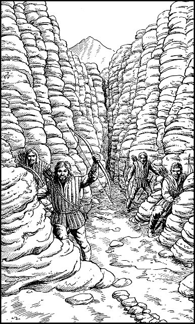

225
Instinctively you reach for the hilt of your Kai Weapon, but Rimoah stays your hand. ‘Hold, Grand Master. These are not our enemies—they’re our friends.’
The four gaunt, grey, grime-encrusted figures leave their hiding places and move slowly towards the cage. It is not until their leader smiles and reveals his white teeth that you realize they are human. The many weeks that these Siyenese rangers have spent in the hell of the Doomlands have exacted upon them a heavy toll.

‘Greetings, Lord Rimoah,’ says the leader. ‘I am Captain Gildas of the King’s Ranger Regiment, and these are my men—Sergeant Paviz, Ranger Durasso, and Ranger Yalin. We’re glad you’ve arrived before the enemy, though by no more than a few hours at best.’
Captain Gildas looks at you and bows his head reverently. ‘We’re honoured by your presence, Sir Kai. I was lucky to be in Seroa last year when Karvas was crowned King, and I witnessed your knighthood in the Palace Square. We Siyenese will be forever in your debt for ridding us of that usurper—Baron Sadanzo.’
You thank the Ranger Captain for his compliment and tell him that you have come here with Lord Rimoah to help capture the Claw of Naar. ‘It is vital that Sejanoz be denied the Claw,’ you say earnestly, ‘… at all costs.’
‘Fear not, Sir Kai,’ he replies with confidence. ‘We have laid a trap to ensnare the enemy and their foul relic. They’ll not get out of Sunderer Pass. Come, we shall show you what we have prepared, but first you must conceal your skyship before the enemy arrive. Look over there, Lord Rimoah,’ says Gildas, pointing to a distant ravine. ‘That gully is deceptively deep. It will swallow your ship without trace. You must hide it there. But first, may ask a favour?’
Rimoah nods in reply.
‘Our provisions are exhausted. We have some water, but we’ve had nothing to eat for days. Can you spare some food before you depart?’
‘Of course, Captain,’ replies Rimoah. ‘I’ll have the bo’sun drop provisions this instant.’
Rimoah climbs into the boarding cage and is winched up to the rear deck of Cloud-dancer. Within minutes, the cage descends once more, laden with food and water. With a gleeful cry, Gildas throws open the cage door and he and his men leap upon the provisions like ravenous wolves. What little they fail to consume immediately they stow away in their empty backpacks for later.
As Cloud-dancer moves off to seek cover in the distant ravine, Captain Gildas leads you to the mouth of Sunderer Pass and shows you the preparations that he had his men have made in readiness to ambush the enemy squad.
To continue, turn to 334.